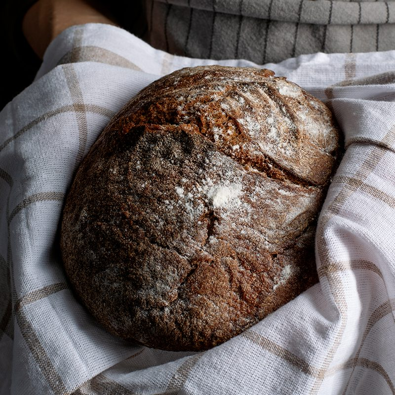

Maria Lopez, Head Baker
Maria has shaped every Signature Loaf since day one. She starts her shift at 3:30 a.m. and still says the best part of her day is the smell of the first batch.
North Star Bakery started in 2012 when two neighbors decided their street needed a place to gather over warm bread. What began as a single oven and a weekend market table is now a full bakery that feeds commuters, families, and event planners across Northfield.
We still bake the way we started: by hand, in small batches, and early in the morning. Our name comes from the idea that a good neighborhood bakery should be a guiding light, a place people can count on every day.

We buy flour from regional mills, eggs and dairy from family farms within 100 miles, and fruit from the farmers market when it is in season. Local ingredients taste better, and buying them keeps money in our community.
We never use artificial preservatives. That is why our bread is best within two days, and why we bake fresh every single morning.
Take a short look inside our kitchen as the first loaves of the day come out of the oven.
Maria has shaped every Signature Loaf since day one. She starts her shift at 3:30 a.m. and still says the best part of her day is the smell of the first batch.
Devon trained in pastry school and brought his love of flaky, buttery layers to our croissants and seasonal danishes.
Priya works with customers to design custom cakes for birthdays, weddings, and office celebrations.